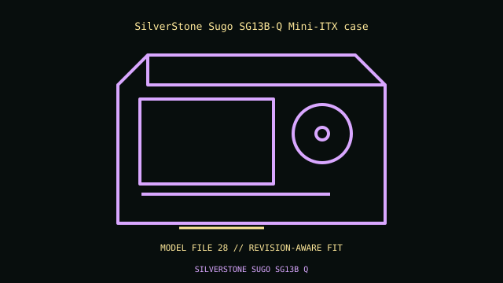

[ IDENTIFIED ENCLOSURE // SMALL-FORM-FACTOR CASES ]
SilverStone Sugo SG13B-Q Mini-ITX case
222 × 181 × 285 mm W×H×D; compact cube with flat front. Mini-ITX; ATX PSU up to 150 mm recommended or SFX with adapter; GPU 266 mm; 120/140 mm front radiator.

VARIANT / ARCHIVAL CAVEAT: SG13B-Q flat front differs from SG13B/white panel. Radiator, long GPU and ATX PSU share volume; confirm radiator thickness and cable routing.
Mechanical specifications and fit
| Catalog identity / revision | SilverStone Sugo SG13B-Q Mini-ITX case |
|---|---|
| Dimensions / construction | 222 × 181 × 285 mm W×H×D; compact cube with flat front. |
| Drive bays / storage | One 3.5-inch or two 2.5-inch drives, mixed setup depends on PSU/cooler. |
| Board, system and compatibility | Mini-ITX; ATX PSU up to 150 mm recommended or SFX with adapter; GPU 266 mm; 120/140 mm front radiator. |
| Revision / service note | SG13B-Q flat front differs from SG13B/white panel. Radiator, long GPU and ATX PSU share volume; confirm radiator thickness and cable routing. |
Preservation and installation notes
Measure the selected GPU, riser, PSU cables and CPU cooler together in the documented layout; compact-case clearance maxima usually trade against each other.
- Photograph the complete model label, assembly revision and option identifiers before opening; keep matching covers, brackets, shields, trays and fasteners together.
- Match riser revision, slot thickness and PSU form factor before assembly, then check panel closure without forcing cables or connectors.
Manufacturer manuals and model-specific sources
- SilverStone Sugo SG13B-Q Mini-ITX case manual and service documentationModel-specific manufacturer specification, owner/service manual or technical reference; verify exact model and revision.
Where normalized dimensions or option-specific limits are not published, the record states that limitation rather than asserting a generic fit. Verify the cited manual revision against the specimen.